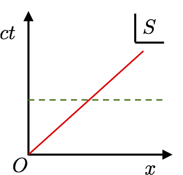
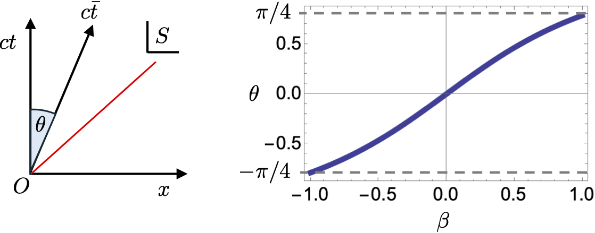
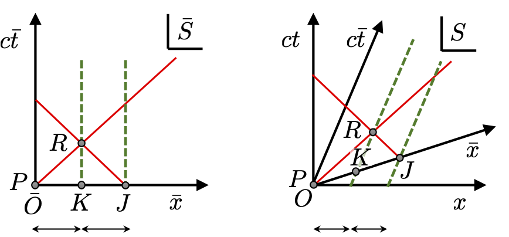
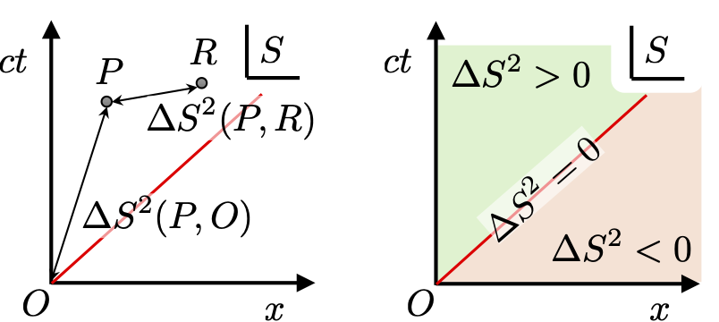
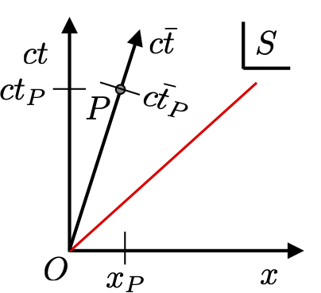

3 Minkowski space-time
In this lecture we will explore the implications of special relativity on the structure of space and time.
3.1 Lorentz boost
In the last lecture we derived a transformation between inertial frames based on the light-speed postulate as \[ {\bf \Lambda}(v) = \frac{1}{\sqrt{1-v^2/c^2}}\left(\begin{array}{cc} 1 & -v/c^2 \\ -v & 1 \end{array}\right). \] which connects coordinates as \[\left( \begin{array}{c} \bar{t}\\ \bar{x} \end{array}\right) = {\bf \Lambda}(v)\left( \begin{array}{c} t\\ x \end{array}\right). \] This form is inconvenient because the time coordinate has different units to the spatial one, and as a result the matrix elements of \({\bf \Lambda}(v)\) have mixed units.
Note - we will slightly adjust our notation from this point on in order to treat space and time on an equal footing.
Since we have a relativistic invariant speed \(c\) available to us we will from now on always rescale time from \(t\) to \(ct\). Introducing the dimensionless speed \(\beta = v/c\) we then redefine our Lorentz boost as \[ {\bf \Lambda}(\beta) = \gamma(\beta)\left(\begin{array}{cc} 1 & -\beta \\ -\beta & 1 \end{array}\right), \tag{3.1}\] with \[ \gamma(\beta) = \frac{1}{\sqrt{1-\beta^2}}, \] connecting coordinates as \[\left( \begin{array}{c} c\bar{t}\\ \bar{x} \end{array}\right) = {\bf \Lambda}(\beta)\left( \begin{array}{c} ct\\ x \end{array}\right). \] Notice now that the Lorentz boost \({\bf \Lambda}(\beta)\) is dimensionless. We will now draw space-time diagrams correspondingly using a \(ct\) and \(x\) axes:

3.2 Finding the \(c\bar{t}\) and \(\bar{x}\)-axes
A key feature of space-time diagrams with our new coordinates is that a light ray from the original is always a line at 45\(^\circ\) from the \(x\)-axis. The motion of any object that is subluminal will always be above this 45\(^\circ\) line. The line it traces out is called its world-line. The world-line of an observer in their rest-frame \(S\) is along the \(ct\)-axis. Lines parallel to this observer’s \(x\)-axis are lines of simultaneity, i.e. they connect all events which this observer measures as happening at the same time.

The world-line of point \(P\), the spatial origin of frame \(\bar{S}\), makes an angle \(\theta = {\rm tan}^{-1}(\beta)\) with the \(ct\)-axis. This world-line is parallel with the \(c\bar{t}\)-axis of frame \(\bar{S}\).
A crucial question is where does the \(\bar{x}\)-axis lie on this space-time diagram in frame \(S\)? In Galilean relativity \(ct = c\bar{t}\) so \(x\) and \(\bar{x}\) are parallel. This is not the case in special relativity. By symmetry, one can guess the \(\bar{x}\)-axis will be an angle \(\theta\) from the \(x\)-axis. We can confirm this by picking three equally spaced points along the \(\bar{x}\)-axis in \(\bar{S}\) at \(\bar{t}=0\), the spatial origin \(P\), \(K\) and \(J\). Next we shoot light rays from \(P\) and \(J\) towards the middle point \(K\). These meet at a space-time point \(R\) on the world-line of \(K\). This situation in \(\bar{S}\) is shown here:

Now we transform this set of points into frame \(S\). The world-line of \(P\) is the \(c\bar{t}\)-axis we determined above. The world-lines of \(K\) and \(J\) are parallel to the \(c\bar{t}\)-axis and will still be equally spaced (although their separation will be different - see shortly). Next, we locate \(R\) as the intersection of the world-line of \(K\) with a light ray from \(P\). Then we project a light ray from \(R\) backwards and where it intersects the world-line of \(J\) is the event \(J\) itself. Finally, we draw a line through \(P\) and \(J\), its intersection with the world-line of \(K\) is the point \(K\) itself. This line is the \(\bar{x}\) axis and is an angle \(\theta\), as expected, from the \(x\)-axis in frame \(S\).
3.3 Space-time interval
Let’s consider the point \(P\) with coordinates \((ct_P, x_P)\) in \(S\) and ask what is its distance from the origin \(O\)? The value for the distance should be computable by some recipe from the coordinates in some frame. Yet the notion of distance between points is a geometrical one, so we expect whatever value we obtain should be independent of the reference frame we used to compute it. This means that if we use the same recipe in \(\bar S\) to compute the distance using that frame’s coordinates we should get exactly same final answer. Its value should be invariant under the transformations between frames. If our space-time had an Euclidean geometry then we would calculate the distance as: \[ {\rm dist}^2(P,O) = (ct_P - 0)^2 + (x_P - 0)^2, \tag{3.2}\] which is just the sum of the squares of the difference in coordinates of the two points \(P\) and \(O\). This distance is Galilean invariant, since as we saw in the last lecture coordinate differences are invariant under Galilean transformations. However, correspondingly this distance measure is not Lorentz invariant and is therefore unsuitable for the special theory of relativity.
The following distance measure, called the space-time interval, is Lorentz invariant: \[ \Delta S^2(P,O) = (ct_P - 0)^2 - (x_P - 0)^2. \tag{3.3}\] The only modification compared to Equation 3.2 is the negative sign between the terms. However, as we shall see, this reflects a profound change in space-time from having Euclidean to Minkowski geometry. In frame \(\bar S\) the same \((c{\rm time})^2 - ({\rm space})^2\) recipe for computing the space-time interval gives: \[ \Delta S^2(P,O) = (c\bar{t}_P)^2, \tag{3.4}\] since \(P\) is that frame’s spatial origin. You are now invited to show that this result is Lorentz invariant.
It is a matter of convention whether the time or space term have the negative sign. In general relativity space – time is commonly used, while in particle physics time – space is preferred. As Equation 3.4 indicates in this course we will adopt the latter convention.

The interval \(\Delta S^2\) from the origin tells us something important about the nature of the separation between events \(O\) and \(P\). Specifically, we can classify the separation into three distinct types based on the sign of \(\Delta S^2\):
Time-like separation: If \(\Delta S^2 > 0\), the separation is time-like. This means that there exists a reference frame (with a \(c\bar{t}\)-axis going through \(O\) and \(P\)) in which the two events occur at the same spatial location but at different times. Events with time-like separation can influence each other causally.
Space-like separation: If \(\Delta S^2 < 0\), the separation is space-like. This means that there exists a reference frame in which the two events occur simultaneously (with an \(\bar{x}\)-axis going through \(O\) and \(P\)) but at different spatial locations. Events with space-like separation cannot influence each other causally, as they are outside each other’s light cones.
Light-like (or null) separation: If \(\Delta S^2 = 0\), the separation is light-like. This means that the two events are connected by a light signal. In this case, the events lie on the boundary of the light cone and can be connected by a photon traveling at the speed of light.
These classifications are fundamental in understanding the causal structure of space-time in the special theory of relativity.
There is nothing special about the origin in the calculation of the space-time interval. The interval between two points \(P\) and \(R\) is given by \[ \Delta S^2(P,R) = (ct_P - ct_R)^2 - (x_P - x_R)^2 = c^2\Delta t^2 - \Delta x^2, \tag{3.5}\] where in the last expression we emphasise that it is calculated from the squares of coordinate differences.
3.4 Proper time
Let’s consider the time-like separated points \(O\) and \(P\) a bit more closely. As mentioned above, another frame of reference \(\bar{S}\) moving relative to \(S\) always exists whose \(c\bar{t}\) axis goes through \(O\) and \(P\). In frame \(\bar{S}\) the point \(P\) occurs at the spatial origin so its only non-zero coordinate is its time \(c\bar{t}_P\).

Our aim now is to compute what \(c\bar{t}_P\) is in terms \(ct_P\) and \(x_P\). We do this by using the Lorentz transformation connecting them: \[\left( \begin{array}{c} c\bar{t}_P\\ 0 \end{array}\right) = \gamma(\beta)\left(\begin{array}{cc} 1 & -\beta \\ -\beta & 1 \end{array}\right)\left( \begin{array}{c} ct_P\\ x_P \end{array}\right). \] The spatial coordinate gives \(0 = \gamma(\beta)(x_P - \beta c t_P)\), and since \(\gamma(\beta) \neq 0\) this gives the sensible relation \[ \beta = \frac{1}{c}\left(\frac{x_P}{t_P}\right) = \frac{v}{c}. \] The time coordinate gives: \[ c\bar{t}_P = \gamma(\beta)(ct_P - \beta c x_P) = \gamma(\beta)ct_P\left(1 - \left(\frac{x_P}{ct_P}\right)^2\right), \] \[ = \frac{1}{\sqrt{1-\left(\frac{x_P}{ct_P}\right)^2}}ct_P\left(1 - \left(\frac{x_P}{ct_P}\right)^2\right), \] \[ = \sqrt{(ct_P)^2-x_P^2} = \sqrt{\Delta S^2(O,P)} = s. \] The time-elapsed in frame \(\bar{S}\) is precisely the (positive) square-root of the space-time interval between \(O\) and \(P\). This is called the proper time.
Although proper time is derived from a specific reference frame \(\bar{S}\) comoving with the world-line between \(O\) and \(P\), it is a crucial concept in relativity. This is because all observers of events \(O\) and \(P\) can from these events alone reconstruct the frame \(\bar{S}\) and compute the time elapsed in it. So while the proper time is not a Lorentz invariant, it does have a similar special status because it is intrinsic to the observed events. So all observers can compute it and will agree on its value. As we shall see it is the preferred time coordinate in which to describe relativistic motion.
3.5 Time dilation and length contraction
Let’s now consider the unit ticks marks (in whatever units we choose) along the \(ct\) and \(x\) axes of frame \(S\). We know that from the origin the interval is \(\Delta S^2 = 1\) for the time tick along the \(ct\)-axis, and \(\Delta S^2 = -1\) for the space tick along the \(x\)-axis. We can now ask if we move along \(x\) what are the time coordinates \(ct_+\) of points with \(\Delta S^2 = 1\) and \(ct_-\) with \(\Delta S^2 = -1\). The answer is simply: \[ ct_+ = \sqrt{1+x^2}, \] and \[ ct_- = \sqrt{x^2-1}, \] respectively. These curves are hyperbola, that is they are conic section, formed by the intersection of a plane and a double cone (i.e. the light cone). Armed with these curves we can now determine where the unit ticks marks are along the \(c\bar{t}\) and \(\bar{x}\) axes of frame \(\bar{S}\) as viewed in frame \(S\). The picture is shown here:
There is quite a bit of physics in this diagram. The blue curve of \(ct_+\) intersects the \(c\bar{t}\)-axis at exactly the unit tick mark along this axis. Note from the picture that the time coordinate of this point is \(\tau > 1\). A unit of time in \(\bar{S}\) thus appears to take longer in \(S\). This is time dilation. The intersection of the green curve \(ct_-\) with the \(\bar{x}\) gives the unit tick mark along this axis. To determine the length of this tick mark in \(S\) we follow the world-line of the unit tick, which is parallel to the \(c\bar{t}\)-axis, back to the \(x\)-axis. One might ask why we can’t just look at the \(x\) coordinate of the unit tick and infer its length? If we did it would seem like we would get length expansion! But this isn’t correct since we would have then measured the front and end of a moving object at different times. The notion of “length” in a given frame requires we ascertain the location of the front and end of the object at the same time in that frame, specifically as they simultaneously cross the \(x\)-axis. From the picture we see this gives a length \(\ell < 1\), so the a unit of length in \(\bar{S}\) appears smaller in \(S\). This is length contraction.